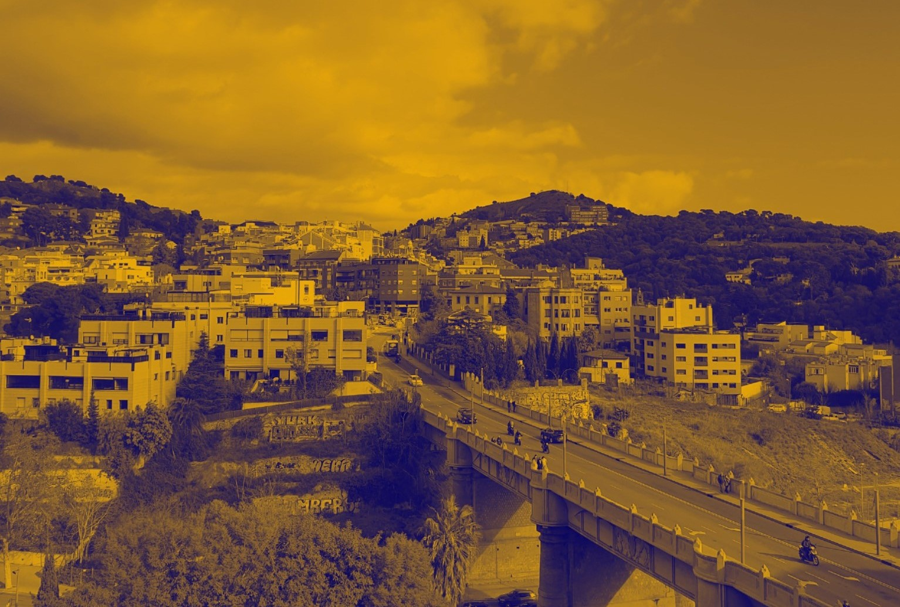

/designing_for_the_next_billion_seconds
(16_january_2022)

I guess this is a reflection from a reflection, a summary of the thoughts this week's course
has created on my mind. It's odd that until now, the beginning of the second term, we hadn't
really talked about the future. We've been introduced to many different topics and worked on
weak signals from the present time, but never tried to hypothesise about what's going to happen
in the next years, how do we think things are going to evolve and how the reality in thirty years
is gonna look like.
This course carried by Andrés Calamaro has been a great chance to ask questions to ourselves and
to let our imagination flow, and I think we all did need this. In my belief, now that we are
starting out projects and we all want them to be cool and to engage people, it's important to have
a critical mind on how do we face the future. I deeply share a reflection Juaco said: "Now, on our
multiscalar diagram we can also add another dimension: time". We have to take into account this
variable in order to make our project durable and empathetic with the new realities we are going
to find.
The week had also a critical approach to internet and the new technologies. Within 30 years (approx
a billion seconds) everything has changed a lot in relation to tech and this had a huge effect on
our society. From the lesson I extracted these three reflections:
- Simple solutions for complex problems make the problem worse. Suitable for any scale and moment in time.
- Design for solidarity with our descendants. This made me think of Ron Wakkary's talk, where he also explained that it's important to design taking into account what will happen after some years.
It was also interesting to talk about different realities, creating invented cities that have to face problems in the future, writing a letter for a person who lived 30 years ago, and others. This was a good starting point for this second chapter of the master, and also a progressive way of getting into the routine again.
Ah, my classmates are amazing artists. This is how we looked during this week's videocalls (from left to right: Juaco, Angel, Julia):